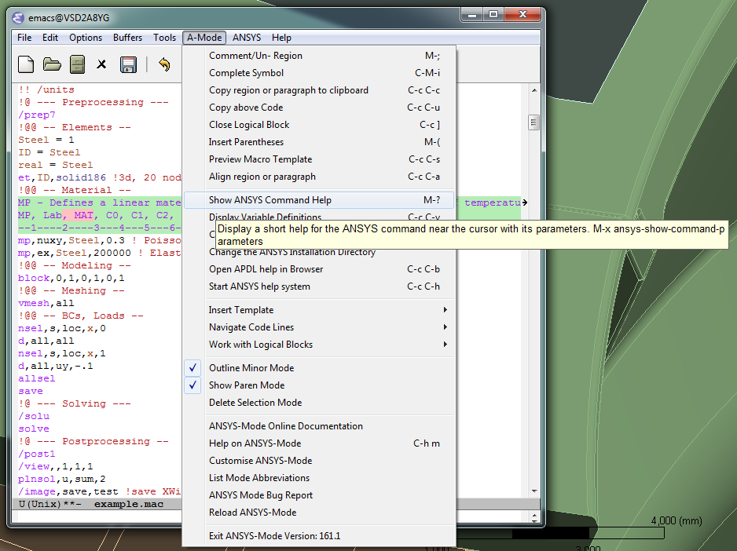

ANSYS-Mode for GNU Emacs, an introductory Tutorial for version 16.1.1

Introduction
Introducing ANSYS-Mode – an APDL environment
This project supports your APDL
workflows with the FEA
suite ANSYS.
It provides an editor mode to GNU Emacs for investigating and coding APDL. The mode offers also managing and communication capabilities for various ANSYS processes, like interactive code debugging with the solver or inquiring the license manager status, etc. Some features are quite sophisticated but its documentation is accessible for ANSYS users with little APDL and Emacs
experience.
Emacs is an up-to-date, powerful and extensible - yet free - editor. High quality software available for every operating system where ANSYS is running.
In the following C-c or e. g. M-c means typing the <CTRL> or <ALT> key together with the <c> key.
Download
Download ANSYS-Mode together with the Emacs editor
- Remarkably there are no costs and license restrictions also for commercial use
Most convenient is taking the pre-configured ANSYS-Mode in conjunction with the latest Emacs distribution for Win32/64 from the ANSYS-Mode releases page on GitHub.

Installation
Install ANSYS-Mode together with Emacs
Extract the former zip archive to an arbitrary location on your file system. Optionally you might install Emacs shortcut icons for the system tray with addpm.exe in Emacs' bin folder.

In this list runemacs.exe is the actual editor executable.
Usage
Open an APDL macro file with Emacs
Start the editor and open example.mac in Emacs' site-lisp folder or any other APDL file (with the extensions mac, inp, dat or anf, otherwise additionally type M-x ansys-mode and <RET>).

Explore the ANSYS-Mode menu
If ANSYS is installed in its default folder C:Program Files under Win64 also system dependent functions are working, like browsing the APDL help with C-c C-b, otherwise, you can easily configure this. All described features can be executed through the ANSYS-Mode menu or with keyboard shortcuts.

Selected ANSYS-Mode Features
Inspect easily WorkBench solver input files (example.dat)
ANSYS-Mode hides the normally uninteresting but usually very large number blocks. On the right hand side is the unhidden content.


Use the ANSYS-Mode APDL command help
Please type M-?, alternatively: C-c ?, on a code line and you will see the APDL command's description and number of parameters (even when the line is commented out). You can continue editing, this temporary overlay - here in blue - remains visible for a while.

NEW: Check your cursor position in the parameter list
For commands with a large number of arguments it is cumbersome to count the arguments, C-? facilitates this for you and visualises dynamically at which parameter position the cursor currently is.

Select and insert templates from the menu into your code
Screenshot with the ANSYS Classics GUI on the left and Emacs on the right on Win64

Preview the extensible APDL code templates
Before inserting an entire template you are able to inspect its content in a preview window (C-c C-s) and might just copy the most relevant snippets, please see below and next slide.

Select an interesting template from a completion window
Type C-c C-s to choose a template name, use the <TAB> key to complete or to open the completion window of available items.

Check auto-insertion and outline your code (tree view)
Create a new APDL file with the suffix
and let Emacs auto-insert a skeleton with `outline' headings. Collapse the content to a tree view with C-c @ C-t and open all (C-c @ C-a) again.

Utilise completions of all – around 2000 – APDL symbols
Move the cursor behind a character - here `c' - or word fragment and type <ESC> <TAB> or C-M-i for completing up to date APDL command-, element- and function names.

Open a summary window of your APDL variables
Type C-c C-v to receive a summary window of all your variable definitions. With an argument (C-u C-c C-v) you will get the current value of your variable at the cursor (Linux only, right).


Structure your variable assignments
Move the cursor to a variable definition paragraph or mark, here in yellow, some definitions and type C-c C-a to align them.

Use the Emacs integrated, programmable RPN calculator
Type C-x * * to open the calculator, type y for pasting results directly into the APDL file. q to quit the 'Emacs Calc' windows.

Debug your code interactively with the solver (GNU-Linux)
You can run the ANSYS solver under Emacs and send code lines from above APDL window with C-c C-j (C-c C-c for whole regions) directly to this process. Below you see the interactive solver output and on the left hand side the corresponding ANSYS images.

Display the license status and preview images on GNU-Linux
In Emacs' mid-section you see the license state (C-c C-l) and left Emacs window (below) a thumbnail view of images from a folder.

Arrange the ANSYS-Mode windows to your needs
The image shows an Emacs 23.2 frame (in reversed colour mode and compiled with the GTK+ toolkit under GNU-Linux) with a ripped off ANSYS-Mode menu field

Configuration
Configure system dependent aspects and user options
The mode comes pre-configured for the default installation of ANSYS for Win64. If something is amiss: Adjust

Documentation and Licensing
Get to know Emacs and its excellent documentation
Newcomers to Emacs should take the guided online tour to get a background of its capabilities and fire up the interactive tutorial (C-h t) which is translated to various languages.


Use the ANSYS-Mode built-in help
Please type C-h m to open the mode help, especially for ANSYS-Mode's usage and keybindings. At the beginning is also a brief introduction of basic Emacs concepts.

You might read further ANSYS-Mode documentation
- Licensing and costs:
- This is free and open software, there are no costs and effectively no restrictions for you using Emacs and ANSYS-Mode also commerically. Both are under the GPL, the Gnu Puplic License described in the LICENSE file.
- Installation:
- More detailed instructions are necessary if you are not using the mode bundled with Emacs for Windows. Please have a look in the README.org file. An online version is on ANSYS-Modes's GitHub Page.
- Hands-on tutorial and reference:
- You will find these in-depth documentation included in the mode's archives on GitHub's releases page or read online.
- News and project history:
- They are placed in the mode's accompanying NEWS.org file
Help and Bugs
Search for help, report bugs and issues
Besides the documentation, have a look in the GitHub's issues site or send an email to the maintainer. Please use the ANSYS-Mode bug report functionality, which might provide helpful status information.

Summary
Use ANSYS-Mode appropriate to your needs
- The relevance of APDL remains tall: `WorkBench' and `AIM' operate exclusively the ANSYS solver with it! For a true understanding the study of APDL is still prerequisite. Furthermore, code APDL only for repetitive tasks and WB/AIM snippets.
- Basic APDL Viewer
Navigating in WB solver input files, discerning relevant information through highlighting, quickly analysing APDL commands with the built-in help or studying their detailed help in your browser.
- Earnest APDL Editor
Specific shortcut keybindings, outlining, code templates, completions, auto-indentation, abbreviations, auto-insertion.
- Advanced APDL Environment
Solver communication/feedback - hybrid between coding and debugging (GNU-Linux only), retrieving license states, error file viewing, abort file handling, extending APDL templates, …